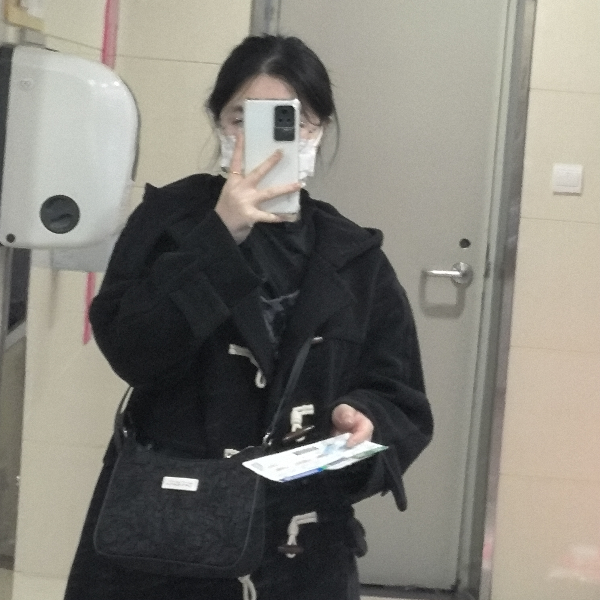
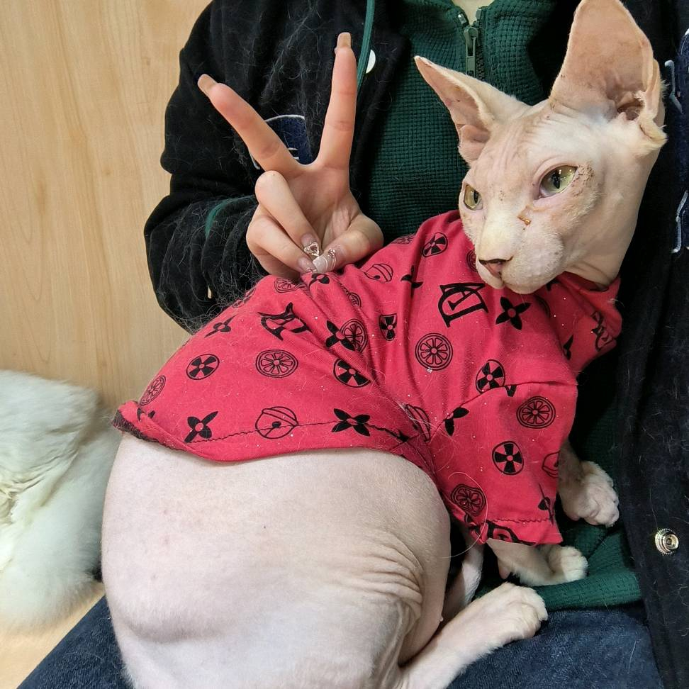
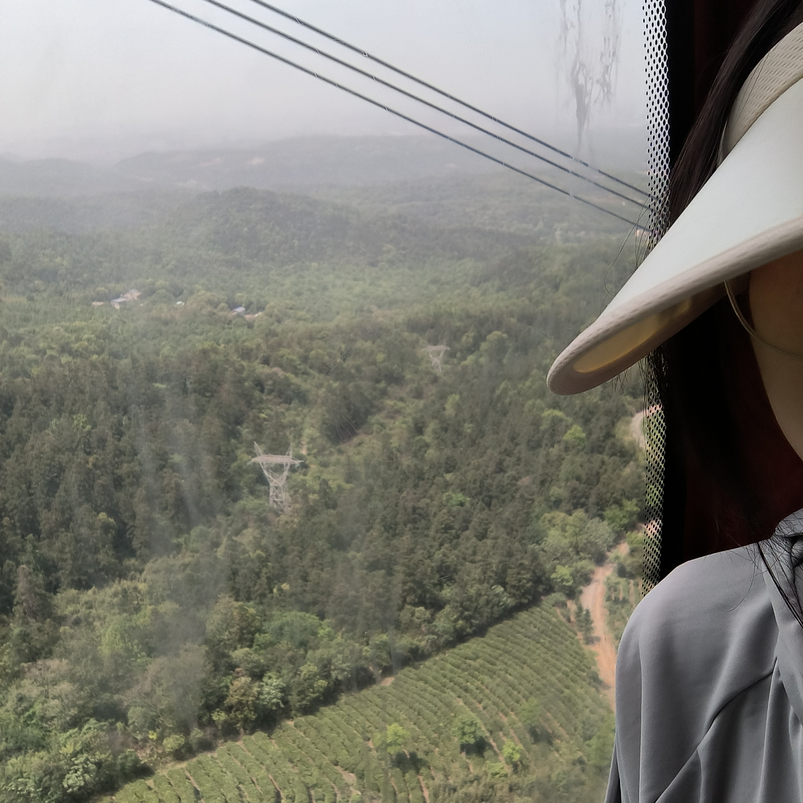

指南

Who am i ?!
我从远在一千多公里的四川而来，我性格开朗，待人友善，容易与人相处。平时喜欢打羽毛球，弹钢琴，做手工，如果还想更多的了解我，就继续看下去吧。

喜欢猫猫
我一有空就会去喂寝室楼下的流浪猫，平时也会去专门的猫咖撸猫。猫软软的毛发与触感，可爱的小动作能给我带来无比的喜悦。

喜欢旅游
我认为旅行是一种非常有意义的活动，可以让人开阔眼界、增长见识，同时也可以放松身心、享受生活。我已经去过西藏，江西，重庆等地。每次旅行都让我感受到不同的魅力和美好，也让我更加热爱旅行这项活动。